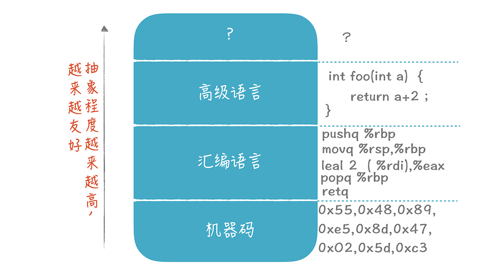
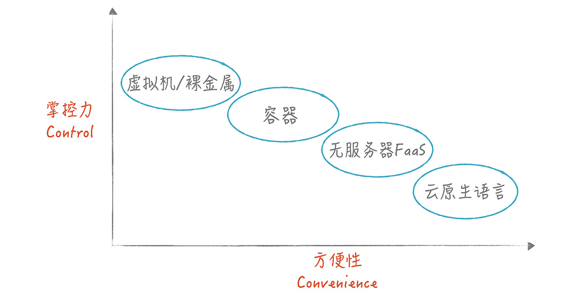

- 00 开篇词 为什么你要学习编译原理？.md.html
- 01 理解代码：编译器的前端技术.md.html
- 02 正则文法和有限自动机：纯手工打造词法分析器.md.html
- 03 语法分析（一）：纯手工打造公式计算器.md.html
- 04 语法分析（二）：解决二元表达式中的难点.md.html
- 05 语法分析（三）：实现一门简单的脚本语言.md.html
- 06 编译器前端工具（一）：用Antlr生成词法、语法分析器.md.html
- 07 编译器前端工具（二）：用Antlr重构脚本语言.md.html
- 08 作用域和生存期：实现块作用域和函数.md.html
- 09 面向对象：实现数据和方法的封装.md.html
- 10 闭包： 理解了原理，它就不反直觉了.md.html
- 11 语义分析（上）：如何建立一个完善的类型系统？.md.html
- 12 语义分析（下）：如何做上下文相关情况的处理？.md.html
- 13 继承和多态：面向对象运行期的动态特性.md.html
- 14 前端技术应用（一）：如何透明地支持数据库分库分表？.md.html
- 15 前端技术应用（二）：如何设计一个报表工具？.md.html
- 16 NFA和DFA：如何自己实现一个正则表达式工具？.md.html
- 17 First和Follow集合：用LL算法推演一个实例.md.html
- 18 移进和规约：用LR算法推演一个实例.md.html
- 19 案例总结与热点问题答疑：对于左递归的语法，为什么我的推导不是左递归的？.md.html
- 20 高效运行：编译器的后端技术.md.html
- 21 运行时机制：突破现象看本质，透过语法看运行时.md.html
- 22 生成汇编代码（一）：汇编语言其实不难学.md.html
- 23 生成汇编代码（二）：把脚本编译成可执行文件.md.html
- 24 中间代码：兼容不同的语言和硬件.md.html
- 25 后端技术的重用：LLVM不仅仅让你高效.md.html
- 26 生成IR：实现静态编译的语言.md.html
- 27 代码优化：为什么你的代码比他的更高效？.md.html
- 28 数据流分析：你写的程序，它更懂.md.html
- 29 目标代码的生成和优化（一）：如何适应各种硬件架构？.md.html
- 30 目标代码的生成和优化（二）：如何适应各种硬件架构？.md.html
- 31 内存计算：对海量数据做计算，到底可以有多快？.md.html
- 32 字节码生成：为什么Spring技术很强大？.md.html
- 33 垃圾收集：能否不停下整个世界？.md.html
- 34 运行时优化：即时编译的原理和作用.md.html
- 35 案例总结与热点问题答疑：后端部分真的比前端部分难吗？.md.html
- 36 当前技术的发展趋势以及其对编译技术的影响.md.html
- 37 云编程：云计算会如何改变编程模式？.md.html
- 38 元编程：一边写程序，一边写语言.md.html
- 加餐 汇编代码编程与栈帧管理.md.html
- 用户故事 因为热爱，所以坚持.md.html
- 第二季回归 这次，我们一起实战解析真实世界的编译器.md.html
- 结束语 用程序语言，推动这个世界的演化.md.html
- 捐赠
37 云编程：云计算会如何改变编程模式？
37 云编程：云计算会如何改变编程模式？
上一讲中，我分享了当前3个技术发展趋势，以及其对编译技术的影响。今天我们把其中的云计算和编程模式、编译技术的之间的关系、前景再展开探讨一下。
总的来说，现在编写程序是越来越云化了，所以，我们简单地称作云编程就好了。
关于云编程，有很多有趣的问题：
1.编程本身是否也能上云？在云上编程会跟本地开发有什么不同？- 2.如何编写云应用，来充分发挥云平台的能力？分为哪些不同的模式？- 3.为什么编写云应用那么复杂？如何降低这些复杂度？云原生应用的开发平台，能否解决这些问题？
本节课，我就带你深入讨论这些问题，希望借此帮助你对编程和云计算技术的关系做一个梳理，促使你更好地利用云计算技术。
首先，来看看如何实现云上编程。
实现云上编程
90年代初，我在大学学习编程，宿舍几个人合买了一台386电脑。那个时候，我记得自己不太喜欢微软提供的MFC编程框架，这和386电脑没有浮点运算器，编译起来比较慢有关，编译一次使用MFC框架的，C++程序的时间，足够我看一页报纸的了。
喜欢编程的人，为了获得流畅的性能，电脑配置总是很高，虽然这足以满足C/C++时代的编程需要，但进入Java时代后，因为应用结构越来越复杂，工程师们有时需要在笔记本或桌面电脑上，安装各种复杂的中间件，甚至还要安装数据库软件，这时，电脑的配置即便再高，也很难安装和配置好这么复杂的环境。那么到了云计算时代，挑战就更大了，比如，你能想象在电脑上安装Hadoop等软件，来做大数据功能的开发吗？
其实，编写一个小的应用还好，但现在的应用越来越复杂，所需的服务端资源越来越多。以我最近参与的一个项目为例，这个项目是采用微服务架构的一个企业应用，要想实现可扩展的性能、更好的功能复用，就要用到数据库、消息队列、容器服务、RPC服务、分布式事务服务、API服务等等很多基础设施，在自己的电脑上配置所有这些环境，是不大可能的。
因此，工程师们已经习惯于，在云上搭建开发和测试环境，这样，可以随需获取各种云端资源。
因为编程跟云的关系越发紧密，有些开发工具已经跟云平台有了一定的整合，方便开发者按需获取云端资源。比如，微软的Visual Studio支持直接使用Azure云上的资源。
再进一步，IDE本身也可以云化，我们可以把它叫做“云IDE”。你的电脑只负责代码编辑的工作，代码本身放在云上，编译过程以及所需的类库也放在云上。Visual Studio Code就具备UI和服务端分离的能力。还有一些服务商提供基于浏览器的IDE，也是实现了前后端的分离。
我认为，未来的IDE可能会越来越云化，因为云IDE有很多优势，能给你带来很多好处。
1.易于管理的编程环境
编程环境完全配置在云上，不用在本地配置各种依赖项。
这一点，会给编程教育这个领域，提供很大的帮助。因为，学习编程的人能够根据需要，打开不同的编程环境，立即投入学习。反之，如果要先做很多复杂的配置才能开始学习，学习热情就会减退，一些人也就因此止步了。
其实，在软件开发团队中，你经常会看到这样一个现象：新加入项目组的成员，要花很长的时间，才能把开发环境搭建起来。因为他们需要安装各种软件，开通各种账号等等。那么，如果是基于云IDE开发的，这些麻烦都可以省掉。
2.支持跨平台编程
有些编程所需要的环境，在本地很难配置，在云中开发就很简单。比如，可以用Windows电脑为Linux平台开发程序，甚至你可以在云上，为你的无人机开发程序，并下载到无人机上。
在为手机编程时，比较复杂的一项工作是，适配各种不同型号的手机。这时，你只需要通过云IDE，整合同样基于云的移动应用测试环境，就可以在成百上千种型号的手机上测试你的应用了。
3.更强的计算能力
有些软件的编译非常消耗CPU，比如，完整编译LLVM可能需要一两个小时，而充分利用服务器的资源可以让编译速度更快。如果你从事AI方面的开发，体会会更深，AI需要大量的算力，并且GPU和TPU都很昂贵，我们很难自己去搭建这样的开发环境。而基于云开发，你可以按需使用云上的GPU、TPU和CPU的计算能力。
4.有利于开发过程的管理
开发活动集中到云上以后，会有利于各种管理工作。比如，很多软件项目是外包开发的，那么你可以想象，基于云编程的平台，甲乙双方的项目管理者，都可以获得更多关于开发过程的大数据，也更容易做好源代码的保护。
5.更好的团队协作
越来越多的人已经习惯在网上编写文档，平心而论，线上文档工具并没有本地的Office软件功能强大，是什么因素让我们更加偏爱线上文档工具呢？就是它的协作功能。团队中的成员可以同时编辑一个文档，还可以方便地将这个文档在团队中分享。
而我比较希望见到这样的场景，那就是，程序员们可以基于同一个代码文件，进行点评和交互式的修改，这相当于基于云的结对编程，对于加强团队的知识分享、提升软件质量都会有好处。
基于上述几点，我个人猜测：编程这项工作，会越来越与云紧密结合。这样一来，不仅仅能方便地调取云端的资源，越来越多的编程环境也会迁移到云上。
既然提到了在云上编程的方式，那么接下来，我们从编译技术的视角，来探讨一下，如何编写能充分运用云计算强大威力的应用，这样，你会对云计算有一个更加全面的认知。
如何编写云应用？
学习编译原理，你可能会有一个感受，那就是编程可以在不同的抽象层次上进行。也就是说，你可以通过抽象，把底层复杂的技术细节转换成上层简单的语义。
程序员最早是直接编写机器码，指令和寄存器都要直接用0101来表示。后来，冯·诺依曼的一个学生，发明了用助记符的方法（也就是汇编语言）简化机器码的编写。用汇编语言编程的时候，你仍然要使用指令和寄存器，但可以通过名称来引用，比如34讲中，用pushq %rbp这样的汇编指令来表示机器码0x55。这就增加了一个抽象层次，用名称代替了指令和寄存器的编码。
而高级语言出现后，我们不再直接访问寄存器，而是使用变量、过程和作用域，抽象程度进一步增加。

总结起来，就是我们使用的语言抽象程度越来越高，每一次抽象对下一层的复杂性做了屏蔽，因此使用起来越来越友好。而编译技术，则帮你一层层地还原这个抽象过程，重新转换成复杂的底层实现。
云计算的发展过程跟编译技术也很类似。云计算服务商们希望通过层层的抽象，来屏蔽底层的复杂性，让云计算变得更易用。
而且，通常来说，在较低的抽象层次上，你可以有更大的掌控力，而在更高的抽象层次上，则会获得更好的方便性。

虚拟机是人们最早使用云资源的方式，一台物理服务器可以分割成多个虚拟机。在需要的时候，可以创建同一个虚拟机镜像的多个实例，形成集群。因为虚拟机包含了一套完整的操作系统，所以占据空间比较大，启动一个实例的速度比较慢。
我们一般是通过编写脚本来管理软件的部署，每种软件的安装部署方式都不相同，系统管理的负担比较重。
最近几年，容器技术变得流行起来。容器技术可以用更轻量级的方式，分配和管理计算资源。一台物理服务器可以运行几十、上百个容器，启动新容器的速度也比虚拟机快了很多。
跟虚拟机模式相比，容器部署和管理软件模块的方式标准化了，我们通过Kubernetes这样的软件，编写配置文件来管理容器。从编译原理的角度出发，这些配置文件就是容器管理的DSL，它用标准化的方式，取代了原来对软件配置进行管理的各种脚本。
无服务器（Serverless）架构，或者叫做FaaS（Function as a Service），做了进一步的抽象。你只要把一个个功能写成函数，就能被平台调用，来完成Web服务、消息队列处理等工作。这些函数可能是运行在容器中的，通过Kubernetes管理的，并且按照一定的架构来协调各种服务功能。
但这些技术细节都不需要你关心，你会因此丧失一些掌控力，比如，你不能自己去生成很多个线程做并行计算。不过，也因为需要你关心的技术细节变少了，编程效率会提高很多。
上面三个层次，每一级都比上一级的抽象层次更高。就像编译技术中，高级语言比汇编语言简单一样，使用无服务架构要比直接使用虚拟机和容器更简单、更方便。
但即使到了FaaS这个层次，编写一个云应用仍然不是一件简单的事情，你还是要面临很多复杂性，比如，处理应用程序与大容量数据库的关系，实现跨公有云和私有云的应用等等。那么能否再进一步抽象并简化云应用的开发？是否能通过针对云原生应用的编程平台，来实现这个目标呢？
为了探究这个问题，我们需要进一步审视一下，现在云编程仍然有哪些，需要被新的抽象层次消除掉的复杂性。
对云原生编程平台的需求：能否解决云应用的复杂性？
在《人月神话》里，作者把复杂性分为两种：
- 一种叫做本质复杂性（Essential Complexity），指的是你要解决的问题本身的复杂性，是无法避免的。
- 一种叫做附属复杂性（Accidental Complexity），是指我们在解决本质问题时，所采用的解决方案而引入的复杂性。在我们现在的系统中，90%的工作量都是用来解决附属复杂性的。
我经常会被问到这样的问题：做一个电商系统，成本是多少？而我给出的回答是：可能几千块，也可能很多亿。
如果你理解我的答案，那意味着比较理解当前软件编程的复杂性问题。因为软件系统的复杂性会随着规模急剧上升。
像阿里那样的电商系统，需要成千上万位工程师来维护。它在双11的时候，一天的成交量要达到几千亿，接受几亿用户的访问，在性能、可靠性、安全性、数据一致性等维度，都面临巨大的挑战。最重要的是，复杂性不是线性叠加的，可能是相乘的。
比如，当一个软件服务1万个用户的时候，增加一个功能可能需要100人天的话；针对服务于1百万用户的系统，增加同样的功能，可能需要几千到上万人天。同样的，如果功能不变，只是用户规模增加，你同样要花费很多人天来修改系统。那么你可以看出，整体的复杂性是多个因素相乘的结果，而不是简单相加。
这跟云计算的初衷是相悖的。云计算最早承诺，当我们需要更多计算资源的时候，简单增加一下就行了。然而，现有软件的架构，其实离这个目标还很远。那有没有可能把这些复杂性解耦，使得复杂性的增长变成线性或多项式级别（这里是借助算法复杂性的理论）的呢？
我再带你细化地看一下附属复杂性的一些构成，以便加深你对造成复杂性的根源的理解。
1.基础设施的复杂性
编写一个简单的程序，你只需要写写业务逻辑、处理少量数据，采用很简单的架构就行了。但是编写大型应用，你必须关心软件运行的基础设施，比如，你是用虚拟机还是容器？你还要关心很多技术构成部分，比如Kubernetes、队列、负载均衡器、网络、防火墙、服务发现、系统监控、安全、数据库、分片、各种优化，等等。
这些基础设施产生的复杂性，要花费你很多时间。像无服务器架构这样的技术，已经能够帮你屏蔽部分的复杂性，但还不够，仍然有很多复杂性因素需要找到解决方案。举个例子。
大多数商业应用都要很小心地处理跟数据库的关系，因为一旦数据出错（比如电商平台上的商品价格出错），就意味着重大的商业损失。你要根据应用需求设计数据库结构；要根据容量设计数据库分片的方案；要根据数据分析的需求设计数据仓库方案，以及对应的ETL程序。
一个经常出现的情况是，数据处理的逻辑分布在几个微服务中，要让它们对数据的修改满足事务特征，所以你要在代码里添加与分布式事务有关的逻辑。
那么，能否由云原生的开发平台来自动处理所有这些事情？我们只需要做业务对象（比如订单）的逻辑设计，把上述所有技术细节都隐藏起来呢？
2.部署复杂性
大型软件从编写代码，到部署，再到生产环境运行，是一个复杂的过程。
- 源代码可能有多个分支，需要进行合并；
- 需要能够正确地编译；
- 编译后的成果，要打包成可部署的对象，比如容器镜像；
- 要对需要发布的模块进行测试，确保不会因为这次发布而造成很多bug；
- 要对数据库的结构、基础数据等做必要的修改；
- 新版本的软件上线，有时候不是全部上线，而是先让一部分用户使用，然后再针对所有用户；
- 如果上线的特性出现问题，需要能够回滚到原来的版本。
是不是很复杂？那么，这样的复杂性，是否也可以由云原生的开发平台隐藏起来呢？
3.API的复杂性
我们在写云应用的时候，需要通过API来调用别的服务。你需要处理与之相关的各种问题，包括API访问的权限、访问次数的限制、错误处理、不同的RPC协议和调用约定，以及相同的功能在不同的云平台上使用不同的API。
那么我的问题是：能否让API调用跟普通语言的函数调用一样简单，让开发平台来处理上述复杂性呢？
回答上面3个问题，并不简单。但是，根据计算机语言的发展规律，我们总是会想办法建立更高的抽象层次，把复杂性隐藏在下层。就像高级语言隐藏了寄存器和内存管理的复杂性一样。
这样看来，解决云计算的复杂性，要求新的编程语言从更高的一个抽象层次上，做编译、转换和优化。我们只需要编写业务逻辑就可以了，当应用规模扩大时，真的只需要增加计算资源就行了；当应用需求变化时，也只需要修改业务逻辑，而不会引起技术细节上的很多工作量。能解决这些问题的软件，就是云原生的编程语言及其基础设施。
而现在的技术进步已经提供了很好的基础，容器技术、无服务器架构、处理大数据的Map/Reduce架构等，为云原生的编程语言准备好了素材。
我相信，在很多应用领域，我们其实可以降低对掌控力的要求，从而获取更大的方便性的。比如，对于大多数企业应用来说（比如ERP、CRM等），进行的都是以业务数据为核心的处理，也就是以数据库为核心的处理。
这些应用都具备相对一致的模式，通过更高的抽象层次，去除各种附属复杂性是有可能的。像这样的针对数据库编程的特定领域的云原生编程平台，会比较容易成功。
课程小结
本节课，我带你围绕“云编程”这个话题，剖析了云计算技术怎样和编程结合。我希望以下几个观点会对你有所启发：
1.编程环境会逐渐跟云平台结合起来，不仅仅是调用云上的资源，还可能实现编程环境本身的云化。
2.编译技术能够在不同的抽象层次上，处理计算问题，云计算技术也有类似的不同级别的抽象层次。一般来说，抽象层次越高，对技术细节的掌控力就越低，但是获得的便利性就越高。
3.附属复杂性会让成本和工作量呈指数级上升，云原生编程平台的核心任务是去除附属复杂性。而我对于在特定领域，成功应用云原生编程平台，持乐观态度。
一课一思
那么，如果以后的编程环境都搬到云上，你会喜欢吗？为什么？另外，你的实际项目中遇到过哪些复杂性问题属于附属复杂性？你认为该如何解决这些复杂性？
最后，感谢你的阅读，如果这篇文章让你有所收获，也欢迎你将它分享给更多的朋友。
© 2019 - 2023 Liangliang Lee. Powered by gin and hexo-theme-book.